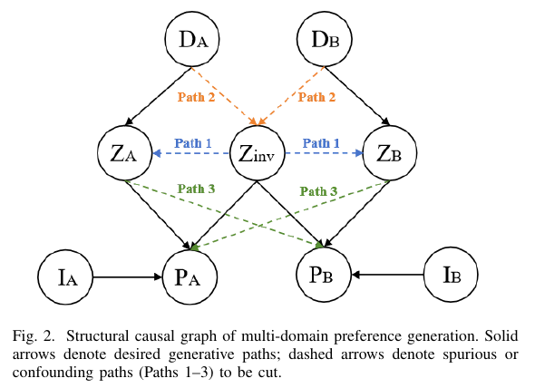
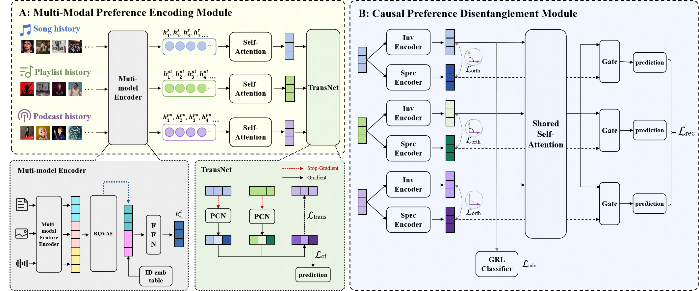
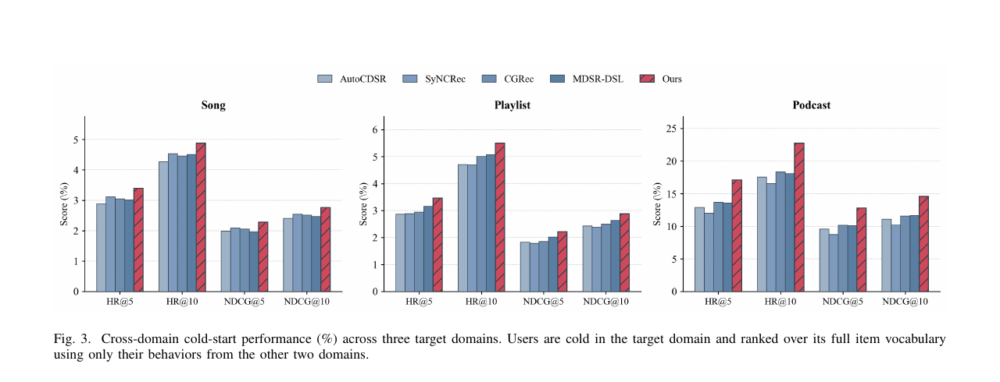

目录 · 5 节
1听歌、歌单、播客放进同一个模型，播客有时还不如单独训：CAMAR 怎么压住负迁移2负迁移被收成三条有害路径3行为对不上的物品，用 Semantic ID 对齐4离线反差集中在稀疏域，拿掉多模态掉得最多5线上是多一路通道，三域主场景都有正收益听歌、歌单、播客放进同一个模型，播客有时还不如单独训：CAMAR 怎么压住负迁移
听歌、收藏歌单、顺手点开一集播客，这三件事经常落在同一次使用里。把三个域拉进同一个模型联合训练，初衷是互相借信号，但现实是各域流量体量差太远了。网易云音乐的工业日志里，大约 356 万同时在三个域活跃的用户，贡献了 2.972 亿次歌曲交互、1.664 亿次歌单交互，播客却只有 7550 万次。这么悬殊的量级下，共享参数的梯度很容易被高频的歌曲域带跑，稀疏域反而吃亏。
离线对比直接把这个现象摆了出来。论文在这套工业数据上跑了九个基线，AutoCDSR 和 CGRec 在播客上的 Hit@5 分别只有 0.1539 和 0.1536，连最好的单域模型 Mamba4Rec（0.1887）都没打过。多域联合训练并不是自带增益，一旦压不住负迁移，稀疏域的表现会直接掉到单域模型下面。
杭州电子科技大学和网易云音乐的这篇工作提出了多域音频推荐框架 CAMAR。它的出发点很直观：用户行为由两块偏好共同驱动——一块是跨域相对稳定的底层口味，比如“治愈”“通勤陪伴”；另一块是各域特有的关注点，比如歌曲里的音色和节奏、播客里的叙事节奏。顺着这个思路，CAMAR 把每个域的用户表示拆成不变分量和特异分量，再用三条约束去压负迁移：两类分量保持正交、不变分量做域对抗训练、跨域交互只允许发生在不变子空间。除此之外，文本、封面和音频会被量化成可训练的 Semantic ID，用来对齐那些行为上很少重叠、内容语义却相近的跨域物品；遇到缺少某个域历史的用户，则靠 TransNet 来补表示。
离线上，CAMAR 在工业日志和 Amazon Reviews 的全部目标域、全部指标上都是最好，而且涨得最猛的正是稀疏域。工业数据里，播客 Hit@5 从最强基线 MOSAIC（一个同样用到了正交和对抗约束的多域模型）的 0.2022 拉到 0.2622，相对提升 29.7%。2026 年 5 月，团队在网易云音乐跑了两周线上 A/B：对照组是现有的分域召回，实验组保持排序和重排不变，额外多加一路 CAMAR 召回。最终歌曲播放时长 +1.0%，播客播放时长 +1.6%，歌单点赞率（曝光后加入收藏的比例）+3.0%，论文称均统计显著。线上数字来自“多加一路召回通道”的对照，不是用 CAMAR 替换原有分域召回。
负迁移被收成三条有害路径
不想让共享参数被高流量域牵着走，先得弄清楚负迁移到底是从哪儿漏进来的。CAMAR 用一张结构因果图把多域偏好的生成关系理了一遍：实线是要保住的正常路径——域属性塑造该域自己的偏好，再驱动本域的召回分数，跨域共享的不变偏好则同时作用于各个域的打分；虚线则是要动手切断的三条有害路径。

来源：论文 Figure 2。三条虚线各对应一类干扰：蓝色 Path 1 是不变偏好污染各域残差；橙色 Path 2 是域属性反过来漏进不变表示；绿色 Path 3 是一个域的特异信号串到另一个域去参与打分。
针对 Path 1，做法是先拆再正交。每个域的用户表示分别经过两个单层线性投影，拆出不变分量 z_inv 和特异分量 z_spec，再直接惩罚二者内积的平方：
L_ortho = average_d E[ <z_inv, z_spec>² ]
两条支路的差别不在结构，而在训练目标：对抗损失只作用在不变分量上，把它推向域不可辨的子空间；特异分量不参与任何跨域交互，用来承接本域残差；正交惩罚则把两路往内积为零的方向推。作者希望不变分量承载主题、情绪、风格这类跨域可复用因素，特异分量承载音色构成、叙事节奏这类只跟单域挂钩的残差。
针对 Path 2，用的是域对抗。这条路径指的是域属性漏进不变表示，从而把不变分量偏向高流量域。不变分量在进跨域自注意力之前，先过一层梯度反转（GRL），再交给一个共享的域分类器。分类器的任务是分辨向量来自哪个域，编码器则被推着往“让分类器猜不出来”的方向走，把可辨识的域信息从不变分量里拿掉。训练时，反转系数 λ 从 0 线性升到 1。均衡时，各域条件下不变分量的分布应大致相同。
Path 3 的隔离最干脆：特异分量从头到尾待在自己的域分支里，只有不变分量能进共享自注意力。活跃域之间先做双向注意力，再取平均得到跨域共享偏好 z_share。这里有个细节：用户没有历史、由 TransNet 补出来的不变分量不参与这次平均，免得补出来的假信号反过来污染共享偏好。最后用一个门控把 z_share 和本域的 z_spec 融在一起，算出用于打分的用户向量：
r = ℓ2_normalize( g ⊙ z_share + (1−g) ⊙ z_spec )
g = sigmoid( W [z_share ; z_spec] + b )
召回分数就是 s(i) = r · e_i，训练走 sampled-softmax。完整目标由召回损失、TransNet 监督和两项因果约束组成，权重 α、β、γ 在验证集上于 [0, 1] 内调节。训练分三个阶段推进：先只优化召回，再把正交加进来，最后才打开对抗和 TransNet 的任务级监督。到了推理阶段，域分类器和两项因果损失全部去掉，只保留 TransNet，用来给缺历史的域补表示。
放回具体听歌场景里就很好理解：一个人常听偏温柔的歌，收藏了“睡前轻音乐”歌单，偶尔也听情感类播客，那跨三个域都能复用的“治愈、助眠”就该走不变分量、在三域之间共享；歌曲侧要记住音色和节奏，播客侧要记住叙事节奏，这些就该留在各自的特异分量里。要是 Path 3 没切断，歌曲里的音色偏好会直接跑去干扰播客打分；要是 Path 2 没堵上，域属性就会漏进不变表示，把它偏向高流量的歌曲域，播客推荐一样跟着受损。
整体流程见图 1。左半边先把各域行为编成完整的域级表示，右半边完成不变与特异的拆分以及受控融合。

来源：论文 Figure 1。左上角是三个域各自的序列编码，左下角是 Semantic ID 和 TransNet 补全；右侧拆出 Inv 与 Spec 两路后，只有 Inv 进入 Shared Self-Attention，再和 Spec 一起经门控出分。
行为对不上的物品，用 Semantic ID 对齐
光切断负迁移还不够，跨域对齐本身还有一道坎。现有多域方法主要吃物品 ID 的协同信号，前提是有足够多的用户同时活跃在多个域里。论文明确提到，真实平台上这类用户只占一小部分，但未给出具体比例。一旦 ID 共现太稀疏，那些内容语义相近、行为记录却几乎不重叠的跨域物品，模型根本对不上。
CAMAR 的解法是把预训练多模态特征离散化成 Semantic ID。物品的标题、描述和标签走 Qwen3-Embedding-0.6B 提文本向量，封面或海报用 Vision Transformer 提视觉向量，歌曲片段或播客片段用公开音频模型 MERT 提音频向量。三路向量拼在一起，在全部域的物品上联合训练一个 RQ-VAE，离线量化成长度为 3、每层 256 个码字的 Semantic ID。推荐器里只消费这组离散 ID，同时维护一张跨域共享、可训练的 codebook；每个物品再拼上本域的 ID embedding，经本域的 FFN 融合成最终物品向量。共享 codebook 的用意很直白——让不同域里主题、情绪或风格相近的物品，在输入层就落在同一套可比较的语义坐标里。
公开数据集 Amazon Reviews 的实验里只用到了物品的文本信息，没有视觉和音频，主要用来检验这套框架走出音频场景后还能不能立住。
另一个现实问题是缺域历史：对完全没有某域历史的用户，各域独立编码器给不出该域表示，也就没法在这个域做推荐。TransNet 用一组按有序域对划分的补全网络，从已有域的表示去推断缺失域的表示。若域 d 已有历史，就用该域自己的 h_u^d；若缺失，则对所有活跃源域 d_s ∈ D_u^+ 的预测 hat h_u^{d_s → d} 取算术平均 (1/|D_u^+|) ∑_{d_s ∈ D_u^+} hat h_u^{d_s → d}，补全网络仍按有序域对各有一个。为了不让补全损失改写已经学好的源域编码器，源域输入和目标域对齐两头都加了 stop-gradient。需要留意的是，主实验的工业数据集只保留了三域都活跃的用户，因此 Table II 对应的推理过程用不到这步补全。为了单独检验补全效果，论文另做了一组严格的跨域冷启动测试：把测试集均分成三折，每折指定一个目标域，掩掉用户在该域的全部历史，只凭另外两个域的行为，在目标域全量物品词表上排序。从 Figure 3 可以看到，CAMAR 在三个目标域上都高于所比较的多域基线，其中播客上的差距最明显。不过论文没有把柱状图整理成数字表，具体数值未报告。

来源：论文 Figure 3。红斜线柱是 CAMAR，四个指标在 Song、Playlist、Podcast 上均高于对照的多域方法，目测差距在 Podcast 最大；柱顶没有标注数值。
离线反差集中在稀疏域，拿掉多模态掉得最多
主评测跑在三域都活跃的用户上，按 19:1 划分训练和测试，每个域取历史截断点之后最早一次交互作为召回真值，汇报 Hit@5/10 和 NDCG@5/10。三个域的交互定义并不一致：歌曲看点赞，歌单看点赞、完播和收藏，播客看播放和收藏。域间的物品量和序列长度也差一截——播客只有 48 万物品、平均长度 21.2，歌曲则是 339 万物品、平均长度 83.4。播客上的绝对 Hit 明显高于歌曲，一部分原因就在这儿：候选空间小得多，序列也短。
下表把三个域的 Hit@5 并排摊开，负迁移和收益到底落在哪儿一眼就能看出来。
| 方法 | Song Hit@5 | Playlist Hit@5 | Podcast Hit@5 |
|---|---|---|---|
| 最好单域（Mamba4Rec） | 0.0310 | 0.0301 | 0.1887 |
| AutoCDSR | 0.0328 | 0.0332 | 0.1539 |
| CGRec | 0.0355 | 0.0333 | 0.1536 |
| MOSAIC | 0.0319 | 0.0313 | 0.2022 |
| 各域最强基线 | 0.0355（CGRec） | 0.0357（SyNCRec） | 0.2022（MOSAIC） |
| CAMAR | 0.0376 | 0.0398 | 0.2622 |
| 相对最强基线 | +5.9% | +11.5% | +29.7% |
看相对涨幅的分布很有意思：歌曲相对 CGRec 只高出 5.9%，歌单相对 SyNCRec 高 11.5%，到了播客上，相对 MOSAIC 直接高出 29.7%。同一组对比里，播客上的 Hit@10、NDCG@5、NDCG@10 相对提升也分别达到 26.9%、29.2% 和 27.9%。反观 AutoCDSR 和 CGRec，在播客上直接跌破了单域模型的水平，说明负迁移是实打实发生的，不是写论文时事后补上的理由。
Amazon Reviews 上选的是 Books、Kindle_Store、Movies&TV 三个品类，趋势一致但幅度小一些：最稀疏的 Movies&TV 上，Hit@5 相对最强基线提升 10.7%（从 0.0224 到 0.0248），Books 上则只有 3.4%。
消融实验在工业数据上逐个拆组件来看。单独去掉正交或去掉对抗，三个域都会掉点；两项因果约束一起拿掉，掉得更狠，播客 Hit@5 从 0.2622 跌到 0.2281。但降幅最大的是去掉全部多模态信息和 Semantic ID、只留本域 ID embedding 的变体：播客 Hit@5 直接降到 0.2063，已经贴近 MOSAIC 的 0.2022；同一变体在歌曲上也降到 0.0331，反倒低于 CGRec 的 0.0355。对稀疏且内容差异大的域来说，多模态语义对齐是最关键的那块支撑。另外，消融里没有“去掉 TransNet”这一项，这也和主评测只包含三域都活跃用户的设定对得上。
论文给出的配置是：隐藏维度和两类 embedding 都是 64，每域 Transformer 为 2 层 1 头，共享不变 Transformer 为 1 层；序列截断为域内 100、跨域混合 200，每用户采 4095 个负例，Adam 初始学习率 1×10⁻³，在 NVIDIA A100 显卡上完成训练，说明这些是报告实验所用的模型宽度、层数、序列长度和优化设置。
线上是多一路通道，三域主场景都有正收益
线上实验在各域的主流量场景做了 A/B 测试。2026 年 5 月的试验在网易云音乐进行，平台每天为数千万用户提供歌曲、歌单和播客推荐。实验组没有替换原有分域召回，而是以它为对照组，在排序和重排模块保持相同的前提下，额外多加一路 CAMAR 召回。核心指标按各域主流量场景选取：歌曲和播客看单次会话的平均播放时长，歌单看点赞率，也就是曝光后被加入收藏的比例。
| 域 | 指标 | 相对对照提升 |
|---|---|---|
| Song | 播放时长 | +1.0% |
| Playlist | 点赞率 | +3.0% |
| Podcast | 播放时长 | +1.6% |
论文称这三项提升均统计显著。同一指标下，播客播放时长 +1.6% 高于歌曲播放时长 +1.0%；歌单是点赞率 +3.0%，不宜和播放时长比大小。离线工业评测只用了三个域都活跃的用户；离线歌曲交互是用点赞构造的，线上歌曲看的却是播放时长。有这些差异在，不要把离线相对提升直接读成线上同等幅度的业务涨幅。
读完这篇，你觉得
夜读鸮记下了，谢谢你的反馈。
点一下即可，无需登录；再点一次撤回。只统计匿名次数，不记录你是谁。
讨论
欢迎补充实验细节、复现经验或不同看法。需 GitHub 登录。
正在加载讨论…